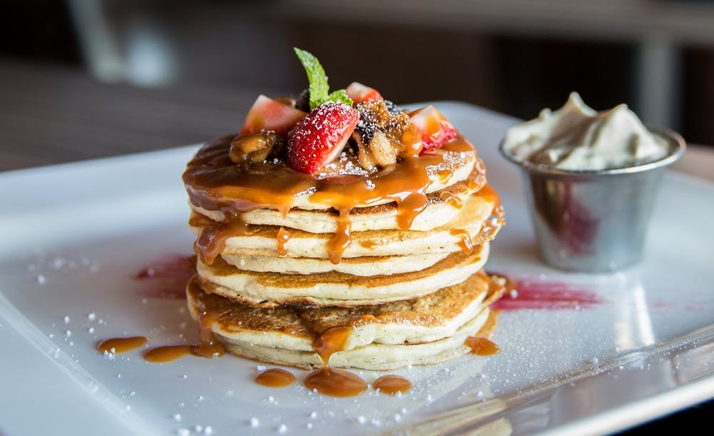

Home
Despre Mine
Cursuri
Scoala
Patiserie
Filme
Patiserie
In a patra camera “Patiseria” aici vei descoperi despre ceia ce îmi place sa fac in Weekend,sa gătesc diferite torturi,dulciuri,va voi prezenta mai jos una dintre cele mai simple rețete,dar și cea mai delicioasa,care o poți prepara in doar 15 minute. Pofta buna!

Banana Pancake
Clătite cu banane plăcute mulțimii, făcute de la zero, care sunt gata în câteva minute. O întorsătură distractivă a clătitelor obișnuite. Această rețetă de clătite cu banane de top este ușor de făcut și se împletește în doar 15 minute, așa că nu trebuie să te trezești devreme pentru a te bucura de un mic dejun satisfăcător. Aflați cum să faceți, să păstrați și să serviți cele mai bune clătite cu banane vreodată.
Ingrediente
1 cană de făină universală
1 lingura zahar alb
2 lingurite praf de copt
¼ lingurita sare
1 ou, batut
1 cană lapte
2 linguri ulei vegetal
Modul de Preparare
Pasul 1: Combinați făina, zahărul alb, praful de copt și sarea într-un castron. Amestecați oul, laptele, uleiul vegetal și bananele într-un al doilea castron.
Pasul 2: Se amestecă amestecul de făină în amestecul de banane; aluatul va fi ușor cocoloaș.
Pasul 3: Încingeți o tigaie sau o tigaie unsă ușor cu ulei la foc mediu-înalt. Turnați sau scoateți aluatul pe grătar, folosind aproximativ 1/4 de cană pentru fiecare clătită. Gătiți până când clătitele devin maro auriu, 3 până la 5 minute pe fiecare parte. Se serveste fierbinte.